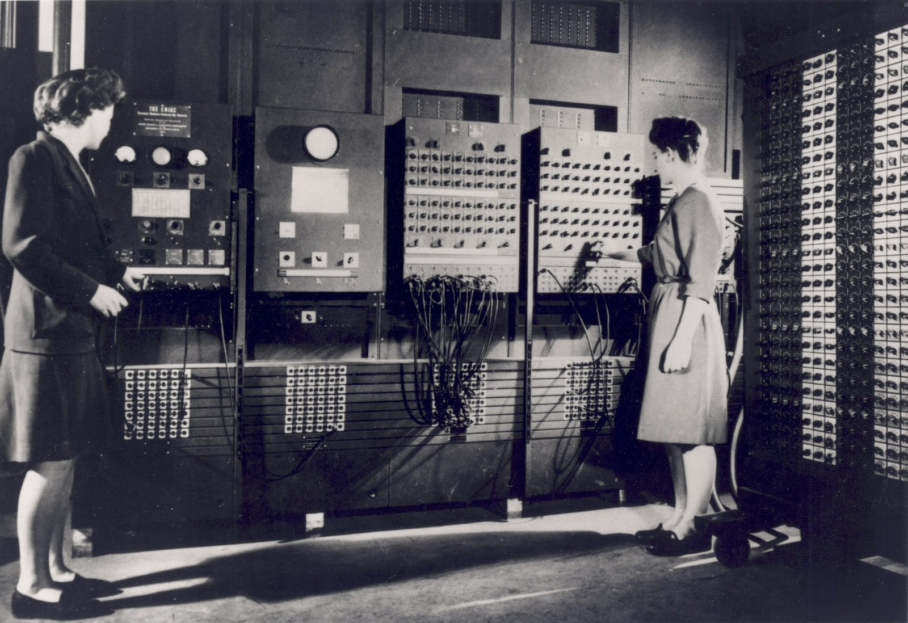
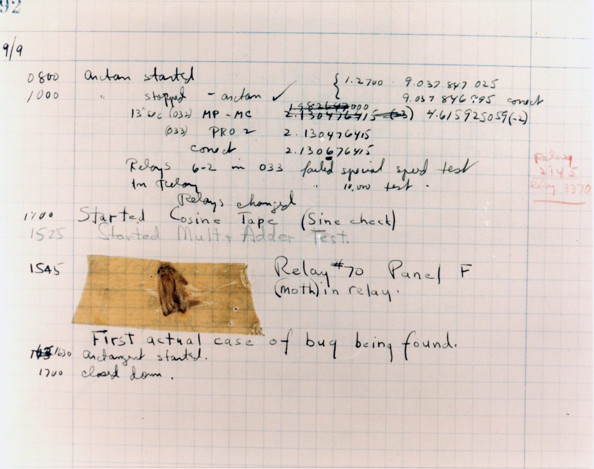

Unit 1 · Lesson 5
After the war: the CPU
ENIAC weighed about 27 tonnes. To give it a new job, people moved cables and switches by hand.
The story
In 1945, in Philadelphia, a giant machine called ENIAC was finished. It filled a room, weighed about 27 tonnes and had about 17,500 valves: glass tubes that worked as electronic switches. It was built to calculate tables for the army's guns.


Six women programmed it: Kay McNulty, Betty Jennings, Betty Snyder, Marlyn Wescoff, Fran Bilas and Ruth Lichterman. There was no manual. They studied the wiring diagrams and set up each problem with cables and switches. A new problem could take days. To find mistakes, they stopped the machine and checked it step by step.
ENIAC was shown to the public in February 1946. The photos showed the six women, but they were not introduced, and history forgot them for about fifty years. In the 1980s a researcher, Kathy Kleiman, found their story again.

.jpg){kind=link}
In June 1945 John von Neumann wrote a report with a big idea: keep the program in the memory, next to the data. Then a new program means new numbers in memory, not new wiring. The ENIAC team (Eckert and Mauchly) had helped to develop the idea, but only von Neumann's name was on the report.
On 9 September 1947, operators of another computer, the Harvard Mark II, found a moth stuck in a relay. They taped it into the logbook as the "first actual case of bug being found". It was a joke: engineers already called faults "bugs". Grace Hopper did not find the moth, but she told the story often and made it famous. She later built some of the first compilers, programs that translate words into machine instructions.


The science
The CPU: the cook
The CPU (central processing unit) is the part of a computer that follows instructions. In our kitchen, the CPU core is the cook: it reads one line of the recipe, does it, and reads the next. The cook remembers almost nothing between lines.
- The cook = CPU core
- The metronome = clock (GHz)
- The countertop = cache
- The workbench = RAM
- The pantry = storage (SSD / HDD)
Fetch, decode, execute, next
Every core repeats one loop. Fetch: get the next instruction from memory. Decode: understand what it means. Execute: do it. Then move on to the next line. A modern core does this billions of times a second.
- The cook = CPU core
- The metronome = clock (GHz)
- The countertop = cache
- The workbench = RAM
- The pantry = storage (SSD / HDD)
The stored program
The program lives in memory, next to the data. Memory is like a row of numbered boxes. Some boxes hold instructions, some hold numbers. To change the program, you change what is in the boxes. No rewiring. In the kitchen, the recipe and the ingredients are both on the workbench (RAM).
- The cook = CPU core
- The metronome = clock (GHz)
- The countertop = cache
- The workbench = RAM
- The pantry = storage (SSD / HDD)
Bugs and debugging
A bug is a mistake in a program. Debugging means finding the bug and fixing it. A good way is to run the program one step at a time and check every box, like ENIAC's programmers did.
Check now
Quick questions. You see the answer at once.
Put the CPU's three steps in order.
- decode
- execute
- fetch
In a stored-program computer, you must rewire the machine to change the program.
True or false?
Who found the moth in the Harvard Mark II in 1947?
- Grace Hopper, alone
- the operators of the machine
- John von Neumann
Try it
Press Step phase and watch the CPU fetch, decode and execute each line of the program. Then change the INPUT numbers, and try the countdown and the program with a bug.
Paper version
RAM has 8 boxes. Boxes 0–5 hold the program, boxes 6–7 hold data. The CPU has one 'hand' (the accumulator). Program 'Add two numbers', INPUT numbers 7 and 5: line 0 INPUT → box 6: box 6 = 7 line 1 INPUT → box 7: box 7 = 5 line 2 LOAD box 6: hand = 7 line 3 ADD box 7: hand = 7 + 5 = 12 line 4 STORE → box 6: box 6 = 12 line 5 OUTPUT box 6: the output is 12 box 6 holds data, not an instruction, so the CPU stops. Each line goes through three phases: FETCH (get it), DECODE (understand it), EXECUTE (do it).
Your turn
Exercises
From ★☆☆ (easy) to ★★★ (hard). Use a hint if you are stuck.
-
Exercise 1 ★☆☆
What does the CPU do in the decode step?
- it gets the instruction from memory
- it works out what the instruction means
- it switches off
-
Exercise 2 ★☆☆
Match each person to what they did.
- Kay McNulty — ?
- John von Neumann — ?
- Grace Hopper — ?
- Alan Turing — ?
-
Exercise 3 ★★☆
You run the 'Add two numbers' program with the INPUT numbers 9 and 4. What is the output?
-
Exercise 4 ★★☆
The countdown program starts with box 6 = 3 and box 7 = 1. Each time round, it outputs box 6 and takes 1 away. How many numbers does it output before it stops?
-
Exercise 5 ★★☆
The program with a bug says: INPUT → box 6 · INPUT → box 7 · LOAD box 6 · ADD box 8 · STORE → box 6 · OUTPUT box 6. RAM has boxes 0 to 7. Where is the bug?
- INPUT → box 7
- ADD box 8
- OUTPUT box 6
-
Exercise 6 ★★☆
Grace Hopper invented the word 'bug'.
True or false?
-
Exercise 7 ★★★
The hand holds 7 and box 7 holds 5. Put in order what happens to the instruction on line 3, 'ADD box 7'.
- Decode: it means 'add the number in box 7 to the hand'.
- Execute: the hand now holds 12.
- Fetch: the CPU gets 'ADD box 7' from line 3.
- Next: the CPU moves on to line 4.
-
Exercise 8 ★★★
Why was it better to keep the program in memory than to wire it with cables, like on ENIAC?
In one sentence
The CPU fetches one instruction, does it, and fetches the next, billions of times a second.
Words of the chapter
- CPU
- the part of a computer that follows instructions: the cook CPU (processore)
- instruction
- one small order, one line of a program istruzione
- fetch–decode–execute
- get the instruction, understand it, do it: the loop of every core prelievo–decodifica–esecuzione
- stored program
- instructions kept in memory, next to the data programma memorizzato
- memory box
- one numbered place in memory that holds one number cella di memoria
- bug · debug
- a mistake in a program · finding and fixing it bug · debug
- valve
- a glass tube that worked as an electronic switch in early computers valvola termoionica